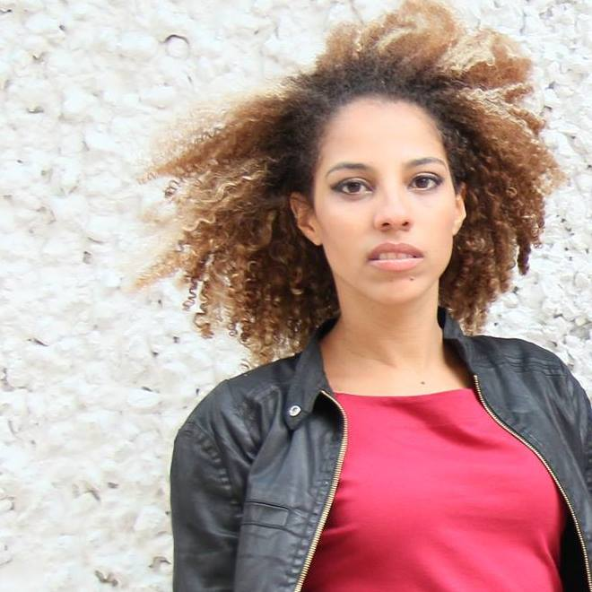
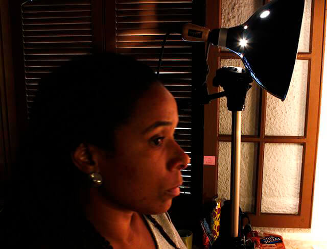
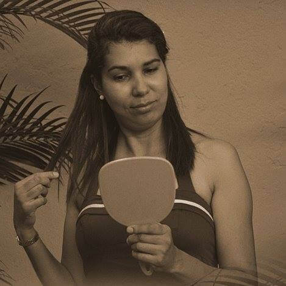

Funções / Produção
As informações de cada perfil são de responsabilidade das profissionais.
Você quer conhecer profissionais de quais estados?
Marcar/Desmarcar todos
CARREGANDO ...
Ana Carolina M Alho (SP)
Ana Carolina M Alho
31 anos | Botucatu (SP)
karolkaos@hotmail.com
Sou formada em cinema, atualmente cursando Pós – Graduação/MBA - Comunicação e Marketing em mídias digitais na Estácio previsão de conclusão em 10/2016. Possuo experiência com continuidade, assistência de direção, realização de roteiro, edição e manutenção do cronograma. Supervisão de pessoas, coordenação de atividades e recebimento e distribuição de materiais. Conhecimento em Designer Educacional, atuando com roteirização de vídeo aula. E tenho também experiência com a fotografia still, que umas das minha grandes paixões, com isso incluí a experiência com montagem de estúdio, edição de fotografia e videos. Minhas principais habilidades são: Integridade e coerência, flexibilidade.
Outras atividades de Ana Carolina M Alho
Assistência de Direção |
Continuidade |
Edição |
Fotografia Still
Amostra de vídeo
 Anna Andrade (PE)
Anna Andrade (PE)
Anna Andrade
32 anos | Recife (PE)
anna.andrade@gmail.com
Bacharel em Produção Cultural (IFRJ) e Pós Graduanda em Gestão de Projetos (FG), é produtora cultural independente e atua nas áreas de audiovisual, literatura e música. No Audiovisual, trabalhou como produtora do longa-metragem "A Noite Escura da Alma" (Henrique Mendes Dantas, BA, 2015) e dos curtas-metragem "Avenida Presidente Kennedy" (2014), "Milagres" (2015) e "Frequências" (2016), dirigidos por Adalberto Oliveira (PE). Também traduziu e legendou os curtas "Tarja Preta" (Márcio Farias, PE, 2015), e "Os Filmes que Moram em Mim" (Caio Sales PE, 2015) . Atualmente está na pré produção de seu primeiro curta metragem, "Entremarés", aprovado no 9º Edital Funcultura Audiovisual.
https://www.facebook.com/milagresdoc/
Outras atividades de Anna Andrade
Captação de Recursos |
Coordenação de Projeto |
Direção |
Exibição |
Legendagem |
 Anna Paula Furtado (SP)
Anna Paula Furtado (SP)
Anna Paula Furtado
21 anos | São Paulo (SP)
furtadoannapaula@gmail.com
Estou no oitavo semestre da faculdade de Cinema. Dirijo e faço o roteiro do meu TCC, um documentário sobre resistência feminina no Samba. Busco atuar nessas áreas, de cultura popular e questões de gênero e raça. Estou no começo da minha carreira mas sonho grande e não paro quieta, estou sempre à disposição!
Outras atividades de Anna Paula Furtado
Continuidade |
Direção |
Fotografia Still |
Roteiro
Amostra de vídeo
 Amanda Ramos (PE)
Amanda Ramos (PE)
Amanda Ramos
29 anos | Olinda (PE)
aamandaramos@gmail.com
Amanda Ramos é cineclubista, curadora e produtora cultural independente com experiência em festivais e mostras de cinema; Bacharelanda em Ciências Sociais (UFRPE) e integrante do Quebrando Vidraças, coletivo de cinema e gênero. Ministra oficinas de formação de cineclubes e palestras relacionadas ao tema em escolas, entidades sociais e municípios de Pernambuco.
Outras atividades de Amanda Ramos
Cineclubismo | Programação e curadoria
 Beatriz Lima (RJ)
Beatriz Lima (RJ)
Beatriz Lima
22 anos | Rio de Janeiro (RJ)
beatriz@caseirasproducoes.art.br
Olá. Sou estudante universitária de cinema na UFF, trabalho no mercado como produtora cultural, mas gosto mesmo de assistência de direção e realização de projetos coletivos.
https://www.facebook.com/caseirasprod/?fref=ts
Outras atividades de Beatriz Lima
Direção | Roteiro
Amostra de vídeo
 Beatriz de Oliveira (SP)
Beatriz de Oliveira (SP)
Beatriz de Oliveira
18 anos | São Paulo (SP)
beeea3@hotmail.com
Olá. Sou estudante de produção audiovisual no segundo semestre, estou aprendendo sobre os diversos segmentos da área. Pretendo atuar na produção e direção de arte, mas agora busco ter experiência e aprendizado em projetos que eu possa acrescentar.
https://www.facebook.com/beatriz.oliveira.14019338?ref=bookmarks
Outras atividades de Beatriz de Oliveira
Pesquisa e desenvolvimento
Amostra de vídeo
 Carem Abreu (MG)
Carem Abreu (MG)
Carem Abreu
46 anos | Belo Horizonte (MG)
caremabreu@gmail.com
Cineasta, jornalista e capoeirista angoleira. Atuo desde 1996 nos setores Audiovisual e de Culturas Populares como Pesquisadora, Gestora Cultural, Diretora, Roteirista, Produtora Executiva, de Elenco e de Set. Idealizadora da Mostra CineAfroBH.
ATUAÇÃO PROFISSIONAL: ATOS CENTRAL DE IMAGENS. youtube.com/user/atosimagens
Desde 2007: Produtora Executiva, Diretora e Roteirista Atuais 2015: produção executiva do filme e seriado CIDADE DO SOL (Ação, 2015MG, Guto Aeraphe) webseriados.tv (vimeo.com/ondemand/webseriecidadedosol).
PRÊMIO: novembro 2015 Edital de Intercâmbio do MINC > Oficina de Produção Audiovisual em DAKAR, Senegal, na Associação Batuk de Comunicação e Cultura.
http://www.mostracineafrobh.com
Outras atividades de Carem Abreu
Direção |
Exibição |
Ensino superior |
Oficinas e cursos livres |
Pesquisa e desenvolvimento |
Roteiro
Amostra de vídeo
 Cíntia Lima (PE)
Cíntia Lima (PE)
Cíntia Lima
32 anos | Recife (PE)
cintiaznlima@gmail.com
Graduanda em Artes Visuais pela UFPE, iniciou a sua carreira como artista visual em 2012, como codiretora e performer da videoarte Maldita Poesia. Desde então, tem se dedicado principalmente à criação de performances que mesclam diferentes linguagens e técnicas artísticas, especialmente as visuais. Com isso, suas obras comumente estão presentes tanto em exposições de arte como em mostras e festivais de cinema. Em 2014, junto a outras artistas, fundou o coletivo DALE (Diretório Artístico de Liberdade Estética). Junto ao coletivo foi codiretora, performer do curta “Rito”. Também em 2014, desenvolveu ""Teorema da Permanência"", uma serie de performances sobre memória e gênero apresentada também em 2015, em Recife. Concilia seus trabalhos no campo das artes visuais com a carreira de atriz.
https://cintiazlima.wordpress.com/
Outras atividades de Cíntia Lima
Atuação |
Direção |
Direção de arte
Amostra de vídeo | Senha: dalerito
 Dielly Amarante (SP)
Dielly Amarante (SP)
Dielly Amarante
25 anos | São Paulo (SP)
diellyamrante@gmail.com
Em busca de novas oportunidades para colocar em pratica o que foi aprendido e absorver mais conhecimento a cada dia, formada em Produção Audiovisual e Cultural, resido em SP.
Amostra de vídeo
 Issis Valenzuela (SP)
Issis Valenzuela (SP)
Issis Valenzuela
33 anos | São Paulo (SP)
issis@tabuleirofilmes.com.br
Diretora e produtora de audiovisual. Sócia da Tabuleiro Filmes.
http://www.tabuleirofilmes.com.br
Outras atividades de Issis Valenzuela
Direção
Amostra de vídeo
 Izabel Neiva (SP)
Izabel Neiva (SP)
Izabel Neiva
40 anos | Guarulhos (SP)
izabel_neiva@hotmail.com
Sou Bacharel em Artes Cênicas pela Escola Celia Helena, licenciada em artes com habilitação em teatro pela Faculdade Paulista de Artes, MBA pós graduada em cinema pela Lafilm Institute, técnica em atuação e direção pelo Inst Stanilavisk. Trabalhos: Assist Direção Longa metragem Off Line, Direção/Produção e atuação curta A Utima Chance, Direção e Produção Curta O Menino da moeda (proj em fase de captação). Dezenas de curtas como atriz, no teatro trabalhei com os diretores: Marco Antônio Brás, Claudia Schapira, Bete Dorgam, Simone Boer.
Outras atividades de Izabel Neiva
Assistência de Direção |
Atuação |
Continuidade |
Direção |
Preparação de Elenco |
Roteiro
Amostra de vídeo
 Jaqueline Oliveira (SP)
Jaqueline Oliveira (SP)
Jaqueline Oliveira
32 anos | São Paulo (SP)
jornalista.jack@gmail.com
Sou comunicadora e me especializei em produção audiviosual por acreditar que precisamos de conteúdos mais profundos e realistas. Ainda não me envolvi em nenhum trabalho do tipo, a não ser durante os estudos. Porém, estou à disposição para colaborar com todas as manas desse grandioso movimento de representatividade da mulher negra e sobretudo, do nosso cinema. Sou fã de documentários e tenho muita vontade de produzir algum de temática relevante a sociedade. Acredito que o audiovisual tem muito potencial de levar conhecimento e reflexão por meio de obras nacionais de qualidade.
https://medium.com/@jornalista.jack/
 Karina Gama (RJ)
Karina Gama (RJ)
Karina Gama
24 anos | Rio de Janeiro (RJ)
kakahgama@gmail.com
Atualmente Estudante de Produção Cultural, no Instituto Federal do Rio de Janeiro (IFRJ). Durante dois anos, entre o período de 2009 e 2011, aperfeiçoei meus conhecimentos na "Escola de Artes e Tecnologia Oi Kabum!", adquirindo aprendizagem em Design Sonoro, Vídeo, Design Gráfico e outros temas vinculados ao Audiovisual, tendo especialização em Motion Design. No período entre 2010 e 2011 tive a chance de estudar na "Escola de Cinema 5 Visões, Formação Técnica Audiovisual", onde obtive conhecimento sobre Direção, Produção, Iluminação e Fotografia, tendo também especialização em Figurino e Maquiagem.Vale ressaltar minhas atuações na área de Audiovisual com cinema e TV atuando como Continuista, auxiliando na Direção cinematográfica.
Outras atividades de Karina Gama
Captação de Recursos |
Continuidade
Amostra de vídeo
 Karoline Maia (SP)
Karoline Maia (SP)
Karoline Maia
22 anos | São Paulo (SP)
karolinemaias@gmail.com
Sou formada em Rádio e TV, criadora e produtora das web-séries Nossa História Invisível e Cultura das Bordas. No audiovisual, atuo na direção de fotografia, edição e finalização.
http://maiakarol.tumblr.com/jardimcarolina
Outras atividades de Karoline Maia
Direção |
Direção de fotografia |
Edição
Amostra de vídeo
 Keila Serruya (AM)
Keila Serruya (AM)
Keila Serruya
Manaus (AM)
keilaserruya@gmail.com
Formada em comunicação social, manauara, diretora audiovisual, artista visual e produtora. Diretora de obras audiovisuais “Nessa Cidade Todo Mundo Já Bebeu na Bica” e “ASSIM”, que circularam em festivais nacionais e internacionais e hoje estão sendo exibidos em canal fechado. Produtora e assistente de direção em projetos series, curtas, longas metragens, espetáculos e intervenções. Esteve a frente de projetos como MIVA - Mostra Internacional de Videodança da Amazônia, Até o Tucupi, Papo por frame, série de TV na Boca do Povo, serie de TV infantil Buzzz&Bizz, Noite Negra, Grito Rock Manaus dentre outros. Atualmente faz parte do grupo Picolé da Massa e é gestora do DaVárzea das Artes.
Outras atividades de Keila Serruya
Assistência de Direção |
Cineclubismo |
Continuidade |
Direção |
Exibição |
Edição |
Fotografia Still |
Pesquisa e desenvolvimento |
Amostra de vídeo
 Lilian Santiago (SP)
Lilian Santiago (SP)
Lilian Santiago
46 anos | Salto (SP)
lilianssantiago2014@gmail.com
Lilian Solá Santiago é historiadora e Mestre e Integração da América Latina pela USP (Universidade de São Paulo) e atua há mais de 15 anos na área de produção e ensino audiovisual. Atualmente é professora-cineasta do curso de Cinema do CEUNSP - Centro Universitário Nossa Senhora do Patrocínio – Salto /SP, onde coordena a Produtora Experimental do curso, a Kimera Filmes. Entre suas realizações audiovisuais estão os documentários "Fios do Passado" (2015), “Batuque de Graxa” (2012); “Eu tenho a palavra” (2010) ; "Roda o Tereré" (2009); o doc-ficção “Graffiti” (2008); “Balé de Pé no Chão”(2006) e o filme documentário “Família Alcântara” (2005), com Daniel Santiago.
Outras atividades de Lilian Santiago
Direção |
Ensino superior |
Roteiro
Amostra de vídeo
 Luana Dias (RJ)
Luana Dias (RJ)
Luana Dias
31 anos | Rio de Janeiro (RJ)
luanaasd@gmail.com
Sou mulher e negra. Aos 30 anos, acredito que o cinema feito por negras e negros tem uma potência muito positiva para (re) contar nossas histórias, vivências e saberes. Sou formada em jornalismo e, atualmente, estou estudante no curso de pós-graduação de Comunicação e Imagem da PUC-Rio. Tenho interesse particular em produzir documentários, pois é uma forma de conhecer pessoas e histórias contadas em primeira pessoa.
Amostra de vídeo
 Luciana Oliveira (SE)
Luciana Oliveira (SE)
Luciana Oliveira
26 anos | Aracaju (SE)
luoliveira.vieira@gmail.com
Cineasta. Graduada em Audiovisual e Mestranda em Cinema pela Universidade Federal de Sergipe. Pesquisa o cinema de autorrepresentação realizado por mulheres negras atualmente no Brasil.
Outras atividades de Luciana Oliveira
Direção |
Figurino
Amostra de vídeo
 Luma Reis (SP)
Luma Reis (SP)
Luma Reis
28 anos | Santo André (SP)
lumareis@gmail.com
Profissional com Bacharelado em Produção e Política Cultural e Tecnólogo em Produção Audiovisual. Larga experiência profissional em: Elaboração de projeto, cronograma, coordenação de equipe e programação, programação audiovisual, curadoria e exibição de curtas-metragens, logística de produção (contato com artistas, produção de locação), controle de avaliação, contato com realizadores, entre outras. Perfil: Organizado, eficiente e prático.
https://br.linkedin.com/in/lumareis
Lattes: http://lattes.cnpq.br/1269210251962783
Outras atividades de Luma Reis
Roteiro
Amostra de vídeo
Monique Rodrigues (RJ)
Monique Rodrigues
Rio de Janeiro (RJ)
monique010982@gmail.com
Sou formada em Cinema com especializações em roteiro e pesquisa, tendo experiência em festivais, mostras, curta metragens e produção de conteúdo para web.
Outras atividades de Monique Rodrigues
Cineclubismo |
Coordenação de Projeto |
Crítica |
Direção |
Direção de Arte |
Pesquisa e desenvolvimento |
Programação e curadoria |
Roteiro
Amostra de vídeo
 Nadia Bambirra (RJ)
Nadia Bambirra (RJ)
Nadia Bambirra
51 anos | Rio de Janeiro (RJ)
nadiabambirra@hotmail.com
Diretora, atriz, produtora e treinadora de atores. Atualmente dando aula de interpretacao para camera, na escola Wolf Maya e ensaiando o proximo espetaculo.
http://curtaviver.blogspot.com
Outras atividades de Nadia Bambirra
Atuação |
Direção |
Preparação de elenco
Amostra de vídeo
 Natalie Matos (MG)
Natalie Matos (MG)
Natalie Matos
21 anos | Belo Horizonte (MG)
natalie.m.moura@gmail.com
A única certeza que mora em mim é a de que a cada passo aprendo algo novo e construo minha identidade. Como uma árvore que cresce regada ao amor e às dificuldades, dá bons frutos e flores, mas também amadurece antes da hora e às vezes até mesmo cai, mas, sempre lembra que tudo que se vive fortalece suas raízes. E sempre quando eu precisar vou ao meu interior e discuto comigo, para entender esse meu eu que às vezes recusa falar e prefere apenas sentir. Gradua em Cinema e Audiovisual e Técnico em Artes Visuais, hoje tenho projetos de visibilidade ao protagonismo da mulher preta e a juventude periférica.
http://nataliem-moura.wixsite.com/nataliematos
Outras atividades de Natalie Matos
Animação |
Assistência de Direção |
Captação de Recursos |
Captação de Som |
Cenografia |
Continuidade |
Correção de cor |
Direção |
Direção de Arte |
Direção de Fotografia |
Edição |
Fotografia Still |
Iluminação |
Mixagem e efeitos sonoros |
Pesquisa e desenvolvimento |
Preparação de Elenco |
Roteiro
Amostra de vídeo
 Priscila Oliveira (SP)
Priscila Oliveira (SP)
Priscila Oliveira
28 anos | Valinhos (SP)
priscifch@gmail.com
Sou formada em Ciências Sociais e Midialogia, pesquiso direção de criança para cinema no curso Mestrado em Artes da Cena. Minha formação e experiências estão voltadas para roteiro e direção, mas gosto de ampliar meus conhecimentos teóricos e práticos em outras áreas do audiovisual. Também tenho interesse em trabalhos que envolvam o negro e a mulher no cinema (na frente e atrás da câmera), principalmente em relação à construção de personagens.
https://www.facebook.com/ameiavista
Outras atividades de Priscila Oliveira
Assistência de Direção |
Direção |
Ensino superior |
Figurino |
Fotografia Still |
Gerência de Mídia |
Oficinas e cursos livres |
Pesquisa e desenvolvimento |
Preparação de Elenco |
Programação e curadoria |
Roteiro
Amostra de vídeo
 Sarah Brito (RS)
Sarah Brito (RS)
Sarah Brito
34 anos | Porto Alegre (RS)
sarahbrito@gmail.com
Sarah Brito é documentarista e gestora cultural. Atua com planejamento e gestão cultural, realizando projetos em parceria com o Ministério da Cultura, IPHAN, Instituto Brasileiro de Museus, FUNARTE, Petrobrás, entre outros. Como documentarista seus projetos envolvem o diálogo entre cultura digital, memória e culturas tradicionais, especialmente de matriz afrogaucha. Entre seus trabalhos mais recentes, destaca-se o média-metragem "Batuque Gaúcho". O projeto é vencedor do prêmio Etnodoc, realizado pelo IPHAN com financiamento da Petrobrás, levado ao ar na TV Brasil em 2015. É fundadora da Puro Movimento, organização que provoca diálogo entre cultura e marcas.
http://puromovimento.cc
Outras atividades de Sarah Brito
Captação de Recursos |
Coordenação de Projeto |
Fotografia Still |
Pesquisa e desenvolvimento
Amostra de vídeo
 Sassá Souza (SC)
Sassá Souza (SC)
Sassá Souza
Florianópolis (SC)
sa.souzasss@gmail.com
Ativista Cineclubista Negra, fez parte do Cineclube Mate com Angu de onde saiu para fundar com outras feminista da Baixada Fluminense do RJ o Facção Feminista Cineclube. Antes disso lutou pela Pedagogia Libertária e implementação da Lei 10639/03 na cidade de Pelotas, no sul do RS junto ao Coletivo Negada, onde trabalhava com Educação Escolar Quilombola e Desenvolvimento Étnico Racial. Atualmente mora em Florianópolis -SC trabalhando na Secretaria de Ações Afirmativas e Diversidade da Universidade Federal de Santa Catarina e ativa o CineClube Ekô.
Outras atividades de Sassá Souza
Cineclubismo |
Edição |
Gerência de Mídia |
Programação e curadoria |
Roteiro
Amostra de vídeo
 Sheila Pereira (PE)
Sheila Pereira (PE)
Sheila Pereira
38 anos | Paulista (PE)
sheilaborboleta33@hotmail.com
Sou produtora cultural e Musical independente e Free lance na área de Audiovisual.
Outras atividades de Sheila Pereira
Direção de arte
Amostra de vídeo
 Silvia Roberta (BA)
Silvia Roberta (BA)
Silvia Roberta
27 anos | Salvador (BA)
kakahgama@gmail.com
Possuo formação na área de Gestão do Meio Ambiente. Tenho experiência na área de audiovisual, através de produção de Documentário, captação de recurso e Direção de curtas metragens.
Outras atividades de Silvia Roberta
Assistência de Direção |
Captação de Recursos |
Pesquisa e desenvolvimento
Amostra de vídeo
 Stella Zimmerman (PE)
Stella Zimmerman (PE)
Stella Zimmerman
54 anos | Recife (PE)
agirafilmes@gmail.com
Stella Zimmerman, sócia fundadora da Agira Filmes, estudou matemática na FFPP e vídeo na City and College em Londres. Desde o início dos anos 2000, trabalha como produtora executiva e diretora de produção. Em destaques alguns filmes: Amarelo Manga de Cláudio Assis, 2002; Eu vou de volta de Cláudio Assis e Camilo Cavalcante, 2007; Um lugar ao sol de Gabriel Mascaro, 2009; Febre do Rato de Cláudio Assis, 2011; A História da Eternidade de Camilo Cavalcante, 2012; Big Jato, de Cláudio Assis, 2014.
Amostra de vídeo
 Thais Scabio (SP)
Thais Scabio (SP)
Thais Scabio
39 anos | São Paulo (SP)
thaisscabio@gmail.com
Diretora, Produtora, educadora e cineclubista. Coordenadora dos projetos "JAMAC Cinema Digital" e " coletivo Mascate Cineclube", em São Paulo. Trabalha com cinema digital desde 2002. Graduada em Comunicação Social, Especialista em Direção de Cinema e Video pela ELCV de Santo André. Sócia-fundadora da produtora Cavalo Marinho Audiovisual, foi produtora executiva da animação "Graffiti Dança, ganhadora do prêmio de Melhor Curta Brasileiro do Anima Mundi 2013. Atualmente produz e dirige a websérie "Terror em um minuto" e esta em desenvolvimento de seu primeiro longa-metragem.
http://www.cavalomarinhoaudiovisual.com
Outras atividades de Brenda Ligia Miguel
Direção |
Cineclubismo |
Oficinas e cursos livres |
Roteiro
Amostra de vídeo
Vânia Feitosa (SP)
Vânia Feitosa
36 anos | Jundiaí (SP)
feitosavcf@yahoo.com.br
Produtora cultural, desenvolve projetos de audiovisual comunitário, atualmente mescla a linguagem com pesquisas de patrimônio histórico.